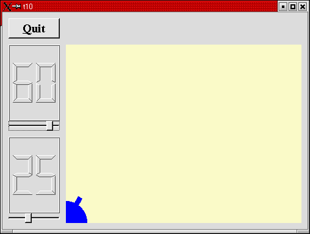
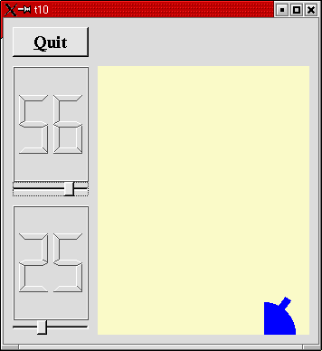

トップページ＞＞＞
「ぷろぐらみんぐ」目次＞＞＞
「Qt Tutorial Index Page」
Chapter 10: Smooth as Silk
初版作成：2002/01/09
- ソースコード
- 解説
- コンパイル・動作確認
- いじくりまわす
- 付録：cannon.h
- 付録：cannon.cpp
- 付録：main.cpp

今回の作例では、Qtのドキュメント中でダブルバッファリング(double buffering)と呼ばれている技法を使って描画
処理の際に見られるちらつきを抑制（しようと）します。また、次のChapter以降で用いることになる「force」制御のための
下準備も整えます。
ダブルバッファリングというのは、ウィジェットに直接描画しません。最初に描画すべき大きさのピクセルマップ（ようするに
描画処理を行うためのビットマップフィールドみたいなもんです）を用意して、ウィジェットの背景をコピーします。んで、その
ピクセルマップに対して必要な描画処理を行います。処理が終わったらウィジェットにそのピクセルマップをぺったりと貼り付け
ます。
このように、あらかじめ描画する部分のコピーを作成し、それに対して描画した後、本来の場所に貼り付ける。二重に(double)
バッファリング(buffering)してるのでダブルバッファリング、とゆーわけです。
実際にChapter 9と本Chapter 10を比べてみて下さい。まるで違います。
まあ、実際のところダブルバッファリングの他にも、repaint()の際描画範囲を指定した上で背景の消去を抑制しているせい
もあるのですが・・・。
理論的には楕円や矩形などの描画処理を一つずつ本番に描いていく場合、間に重い処理が入ったり描画数が多いと「描画している
途中」が見えてしまうわけです。ダブルバッファリングをすることによって、裏側で全部描き終えてから表側にぺたりと一回、
イメージのコピーを行ってお仕舞いになるので、描画している途中が見えません。これによってちらつきや描画途中が見えてしま
うのを抑えることが出来ます（と思います。）
ところで「force」制御とユーのが出てきましたが・・・。単に砲台の回転具合を調整するためのパラメータを付け足すだけです。
というわけで、force用のLCDRangeが新たに付け足されます。
前置きが長くなりました。今回は cannon.h, cannon.cpp, main.cpp が変更されます。ので、最後に付録として掲載しておきます。
付録：cannon.h
付録：cannon.cpp
付録：main.cpp
目次に戻る
それでは各ファイルごとに、ポイント部分の解説を行っていきます。
cannon.h
CannonField クラスに新たに「力」を保持するメンバ群を加えます。
int angle() const { return ang; }
int force() const { return f; }
public slots:
void setAngle( int degrees );
void setForce( int newton );
signals:
void angleChanged( int );
void forceChanged( int );
forceに対するインターフェイスは角度を実装したときと同様の形式にしています。
private:
QRect cannonRect() const;
ダブルバッファリングを行うときに、ウィジェット全体をバッファリングするのは（少なくとも今回のように一部分だけを描画
すれば良いときは）メモリの無駄です。というわけで、砲台を描画するのに最低限必要（だと思われる）大きさの矩形を取得する
ために関数を用意しました。
int ang;
int f;
};
forceは整数型の変数 f に保持されます。
cannon.cpp
#include <qpixmap.h>
QPixmapクラスをダブルバッファリングに使いますので、ヘッダファイルをインクルードしときます。
CannonField::CannonField( QWidget *parent, const char *name )
: QWidget( parent, name )
{
ang = 45;
f = 0;
setPalette( QPalette( QColor( 250, 250, 200) ) );
}
force (f) はゼロで初期化されます。
void CannonField::setAngle( int degrees )
{
if ( degrees < 5 )
degrees = 5;
if ( degrees > 70 )
degrees = 70;
if ( ang == degrees )
return;
ang = degrees;
repaint( cannonRect(), FALSE );
emit angleChanged( ang );
}
setAngle() 関数に若干の変更を加えています。今回みたいなrepaint()の使い方だと、砲台を含んだ部分のみ再描画します。
というのはFALSEを指定すると、指定された矩形領域は実際にウィジェットにペイントイベントが送られる前に消去される事が
無くなるからです。これは描画速度を若干向上し、これによってちらつきを抑えることが可能です。
？？何でこれで描画速度が向上すんの？？うーん・・・まず、再描画する範囲を指定することによって多少向上することは
納得できる。んで・・・ペイントイベントが送られる前に矩形領域の消去を抑制？うーん・・・。よーするに、FALSEを省くと
一旦消去してるっつーこと？
後でこの部分をTRUEにしたりして実験してみたところ、TRUEとFALSEではちらつきの発生が断然違います。
はっきり言って、FALSEではちらつきが全く発生しませんでした。
TRUEにしちゃうと、ちらつきが発生します。ちらつくその一瞬に、CannonFieldのベージュっぽい下地の色が見えているところ
からすると、この解説は正しく、その効果は非常に大きいことが分かりました。
void CannonField::setForce( int newton )
{
if ( newton < 0 )
newton = 0;
if ( f == newton )
return;
f = newton;
emit forceChanged( f );
}
setForce() 関数の実装は setAngle()と全く同様になります。違う点は、force値を示す必要がないためウィジェットの再描画
を行っていない点です。
void CannonField::paintEvent( QPaintEvent *e )
{
if ( !e->rect().intersects( cannonRect() ) )
return;
ここで砲台を描くのに必要な部分のみを描くよう、ペイントイベントを最適化しています。
最初にこれから描画しようとしている部分が砲台と全く関係ない部分であれば、何もしないでreturnしています。rect()の戻り値は
QRectです。んで、QRect::intersects(QRect r)とユーのは、QRectが r とintersects, 交差していればTRUEを返します。
ここでは!でbool型の戻り値を反転していますので、cannonRect()（で返される、砲台を描画するのに必要な矩形領域）と
ペイントイベントによる描画対象の矩形領域が重なっていない時、何もせずに戻るようになっています。
QRect cr = cannonRect();
QPixmap pix( cr.size() );
ここでダブルバッファリング用の一時ピクセルマップを生成しています。ここから先は砲台を描くのに全てこちらのピクセル
マップを使うことになります。んで、ピクセルマップを実際にウィジェットに貼り付けるのは一瞬で終わります。
んで、続いてこんな注意書きがありました。ちょっと分からなかったんで、そのまま掲載します。
This is the essence of flicker-free drawing: Draw on each pixel precisely once. Less, and you get drawing errors.
More, and you get flicker. It doesn't matter much in this example - when the code was written there were still
machines slow enough for it to flicker, but not any more. We've kept the code for educational purposes.
うーん・・・まあ、なるべく重ね塗りになるような描画処理は、処理が重たくなるので止めてね、と言うことでしょうか。
自信無いです。
ちょっと注意して欲しいというか、私自身がこんがらがってしまった部分ですが。QRectは単に矩形領域の座標を保持する
クラスに過ぎない事を忘れてしまうと、QPixmapとの関連がこんがらがってしまいました。というのもQPixmapのコンストラクタ
はとんでもない数がありまして・・・。
QPixmap ()
QPixmap ( int w, int h, int depth = -1, Optimization = DefaultOptim )
QPixmap ( const QSize &, int depth = -1, Optimization = DefaultOptim )
QPixmap ( const QString & fileName, const char * format=0, ColorMode mode=Auto )
QPixmap ( const QString & fileName, const char * format, int conversion_flags )
QPixmap ( const char * xpm[] )
QPixmap ( const QByteArray & data )
QPixmap ( const QPixmap & )
ね？訳わかんなくなってきます。
結局私は何がこんがらがったのかというと、QRectがピクセルマップ自体の矩形領域を保持するように思えてきてしまったから
です（ああ、いったい何いってんだか・・・）。QRectが単に座標値を格納するクラスであるだけでなく、実際のピクセルマップと
密に関わっているような錯覚を受けてしまったわけです。
まあ、これ書いてる今では大丈夫なようですが。
本題に戻ります。あ、そうそう、QRect::size()はQSize型でQRectの矩形領域の幅と高さを返してくれます。
pix.fill( this, cr.topLeft() );
このウィジェットの背景をピクセルマップにコピーします。どういう仕掛けになっているかというと・・・
void QPixmap::fill ( const QWidget * widget, const QPoint & ofs )
んで。これは widget で指定されたウィジェットの、ofsで指定されたオフセット値の位置からQPixmapにコピーします。
今回は cr.topLeft()で、さかのぼれば cannonRect()のtopLeftになります。んで、cannonRect()のtopLeft()はまさしく砲台
の描画領域矩形の左上の座標になります。
ぶっちゃけた話、砲台の部分のイメージを丸ごとコピーしてきてるわけです。
QPainter p( &pix );
p.setBrush( blue );
p.setPen( NoPen );
p.translate( 0, pix.height() - 1 );
p.drawPie( QRect( -35,-35, 70, 70 ), 0, 90*16 );
p.rotate( -ang );
p.drawRect( QRect(33, -4, 15, 8) );
p.end();
んでChapter 9と同様にお絵かきします。今回はピクセルマップをペイントデバイス(Paint Device)としてペイント
オブジェクトを生成しています。ペイントデバイスはQPixmapの他に QWidget, QPicture, QPrinter が指定できます。
今回注目して欲しいのは QPainterのコンストラクタでダブルバッファリング用に作った QPixmap を指定しているところです。
Chapter 9では QPainter p(this) として、CannonFieldに直接描画していました。
この時点ではまだ実際のスクリーン（というかウィジェット）に描画されません。
p.begin( this );
p.drawPixmap( cr.topLeft(), pix );
んで、ペインターを今度はCannonField自体に切り替えます。その後drawPixmapでピクセルマップ pix を cr.topLeft() で返される
座標をオフセットに描画します。
以上でちらつき防止を目指したコーディングはお仕舞いです。最後に、砲台を描くのに最低限必要な矩形領域を返すcannonRect()
を実装します。
QRect CannonField::cannonRect() const
{
QRect r( 0, 0, 50, 50 );
r.moveBottomLeft( rect().bottomLeft() );
return r;
}
この関数で砲台を囲う大きさの矩形領域をウィジェットの座標系で返します。最初 50x50 の大きさの矩形を作り、
続いてその矩形領域の左下がウィジェット自身の左下と一致するよう矩形領域を移動(moveBottomLeft())しています。
QWidget::rect()関数はそのウィジェットの内部の矩形領域をそのウィジェット自身の座標系で返します。そのため戻り値の
左上は 0, 0 になります。
main.cpp
MyWidget::MyWidget( QWidget *parent, const char *name )
: QWidget( parent, name )
{
コンストラクタは殆ど同じです。
LCDRange *force = new LCDRange( this, "force" );
force->setRange( 10, 50 );
次にforceを設定するのに使うLCDrangeを一つ、用意します。
connect( force, SIGNAL(valueChanged(int)),
cannonField, SLOT(setForce(int)) );
connect( cannonField, SIGNAL(forceChanged(int)),
force, SLOT(setValue(int)) );
force ウィジェットとcannonFieldウィジェットをコネクトしてます。角度のウィジェットを作るときに使ったのと同じ手法です。
QVBoxLayout *leftBox = new QVBoxLayout;
grid->addLayout( leftBox, 1, 0 );
leftBox->addWidget( angle );
leftBox->addWidget( force );
Chapter 9では角度表示のウィジェットをレイアウトの左下の方に押しやっていました。今回は垂直方向のレイアウトマネージャ
を使って、角度表示用とforce表示用の二のLCDRangeを配置します。
force->setValue( 25 );
forceの値を25で初期化します。
We initialize the force value to 25.
目次に戻る
んじゃあ、コンパイルしてみましょう。
cannon.cpp cannon.h lcdrange.cpp lcdrange.h main.cpp
[fenjin@seisyuu t10]$ ls
cannon.cpp cannon.h lcdrange.cpp lcdrange.h main.cpp
[fenjin@seisyuu t10]$ progen -n t10 -o t10.pro
[fenjin@seisyuu t10]$ tmake -o Makefile t10.pro
[fenjin@seisyuu t10]$ make
g++ -c -pipe -Wall -W -O2 -DNO_DEBUG -I/usr/lib/qt/include -o cannon.o cannon.cpp
g++ -c -pipe -Wall -W -O2 -DNO_DEBUG -I/usr/lib/qt/include -o lcdrange.o lcdrange.cpp
g++ -c -pipe -Wall -W -O2 -DNO_DEBUG -I/usr/lib/qt/include -o main.o main.cpp
/usr/lib/qt/bin/moc cannon.h -o moc_cannon.cpp
g++ -c -pipe -Wall -W -O2 -DNO_DEBUG -I/usr/lib/qt/include -o moc_cannon.o moc_cannon.cpp
/usr/lib/qt/bin/moc lcdrange.h -o moc_lcdrange.cpp
g++ -c -pipe -Wall -W -O2 -DNO_DEBUG -I/usr/lib/qt/include -o moc_lcdrange.o moc_lcdrange.cpp
g++ -o t10 cannon.o lcdrange.o main.o moc_cannon.o moc_lcdrange.o
-L/usr/lib/qt/lib -L/usr/X11R6/lib -lqt -lXext -lX11 -lm
[fenjin@seisyuu t10]$ ls
Makefile cannon.h lcdrange.cpp lcdrange.o main.o moc_cannon.o moc_lcdrange.o t10.pro
cannon.cpp cannon.o lcdrange.h main.cpp moc_cannon.cpp moc_lcdrange.cpp t10*
んで、実行ファイル t10 を実行すると冒頭に示したようなウインドウが表示されるわけです。左上のQuitボタンをクリック
するとアプリケーションは終了します。
今回新たに追加した「force」は次回以降のChapterで利用することになるでしょう。
目次に戻る
とりあえず、砲台を右端に描画させてみました。cannonRectで返す矩形領域をいじくります。
cannon.cpp
修正前：
r.moveBottomLeft(rect().bottomLeft());
修正後：
r.moveBottomRight(rect().bottomRight());
実験結果を下に示します。

んでは、砲台の左右も反転させてみましょうか？ translateをいじくれば何とかなるかも・・・。いや、無理です。
というのも translate は図形の平行移動を表しています。この場合、translateは原点をずらすために使っているとかんがえれば
イメージしやすいかな、と。
translate(0, pix.height()-1)で、ピクセルマップの矩形領域の左下に原点を移動していることになりますね。
・・・うーん・・・だいぶ込み入ってきましたし、気力も危険域を超えつつあります。
以降、「いじくりまわす」は事実上お休みにさせて下さい。これ以上いじくるとなると、かなりいろいろ手を加える必要が
出てきます。それをやっている気力は既にありません。
基本的にQtのドキュメントを引けば機能が芋蔓式に出てきますので、これから先は「いじくりまわす」のネタはみなさんに
お任せします。
では、次のChapterにてお会いしましょう。
目次に戻る
#ifndef CANNON_H
#define CANNON_H
#include <qwidget.h>
class CannonField : public QWidget
{
Q_OBJECT
public:
CannonField( QWidget *parent=0, const char *name=0 );
QSizePolicy sizePolicy() const;
int angle() const { return ang; }
int force() const { return f; }
public slots:
void setAngle( int degrees );
void setForce( int newton );
signals:
void angleChanged( int );
void forceChanged( int );
protected:
void paintEvent( QPaintEvent * );
private:
QRect cannonRect() const;
int ang;
int f;
};
#endif // CANNON_H
目次に戻る
#include "cannon.h"
#include <qpainter.h>
#include <qpixmap.h>
CannonField::CannonField( QWidget *parent, const char *name )
: QWidget( parent, name )
{
ang = 45;
f = 0;
setPalette( QPalette( QColor( 250, 250, 200) ) );
}
void CannonField::setAngle( int degrees )
{
if ( degrees < 5 )
degrees = 5;
if ( degrees > 70 )
degrees = 70;
if ( ang == degrees )
return;
ang = degrees;
repaint( cannonRect(), FALSE );
emit angleChanged( ang );
}
void CannonField::setForce( int newton )
{
if ( newton < 0 )
newton = 0;
if ( f == newton )
return;
f = newton;
emit forceChanged( f );
}
void CannonField::paintEvent( QPaintEvent *e )
{
if ( !e->rect().intersects( cannonRect() ) )
return;
QRect cr = cannonRect();
QPixmap pix( cr.size() );
pix.fill( this, cr.topLeft() );
QPainter p( &pix );
p.setBrush( blue );
p.setPen( NoPen );
p.translate( 0, pix.height() - 1 );
p.drawPie( QRect( -35,-35, 70, 70 ), 0, 90*16 );
p.rotate( -ang );
p.drawRect( QRect(33, -4, 15, 8) );
p.end();
p.begin( this );
p.drawPixmap( cr.topLeft(), pix );
}
QRect CannonField::cannonRect() const
{
QRect r( 0, 0, 50, 50 );
r.moveBottomLeft( rect().bottomLeft() );
return r;
}
QSizePolicy CannonField::sizePolicy() const
{
return QSizePolicy( QSizePolicy::Expanding, QSizePolicy::Expanding );
}
目次に戻る
#include <qapplication.h>
#include <qpushbutton.h>
#include <qlcdnumber.h>
#include <qfont.h>
#include <qlayout.h>
#include "lcdrange.h"
#include "cannon.h"
class MyWidget: public QWidget
{
public:
MyWidget( QWidget *parent=0, const char *name=0 );
};
MyWidget::MyWidget( QWidget *parent, const char *name )
: QWidget( parent, name )
{
QPushButton *quit = new QPushButton( "&Quit", this, "quit" );
quit->setFont( QFont( "Times", 18, QFont::Bold ) );
connect( quit, SIGNAL(clicked()), qApp, SLOT(quit()) );
LCDRange *angle = new LCDRange( this, "angle" );
angle->setRange( 5, 70 );
LCDRange *force = new LCDRange( this, "force" );
force->setRange( 10, 50 );
CannonField *cannonField = new CannonField( this, "cannonField" );
connect( angle, SIGNAL(valueChanged(int)),
cannonField, SLOT(setAngle(int)) );
connect( cannonField, SIGNAL(angleChanged(int)),
angle, SLOT(setValue(int)) );
connect( force, SIGNAL(valueChanged(int)),
cannonField, SLOT(setForce(int)) );
connect( cannonField, SIGNAL(forceChanged(int)),
force, SLOT(setValue(int)) );
QGridLayout *grid = new QGridLayout( this, 2, 2, 10 );
grid->addWidget( quit, 0, 0 );
grid->addWidget( cannonField, 1, 1 );
grid->setColStretch( 1, 10 );
QVBoxLayout *leftBox = new QVBoxLayout;
grid->addLayout( leftBox, 1, 0 );
leftBox->addWidget( angle );
leftBox->addWidget( force );
angle->setValue( 60 );
force->setValue( 25 );
angle->setFocus();
}
int main( int argc, char **argv )
{
QApplication::setColorSpec( QApplication::CustomColor );
QApplication a( argc, argv );
MyWidget w;
w.setGeometry( 100, 100, 500, 355 );
a.setMainWidget( &w );
w.show();
return a.exec();
}
目次に戻る
トップページ＞＞＞
「ぷろぐらみんぐ」目次＞＞＞
「Qt Tutorial Index Page」